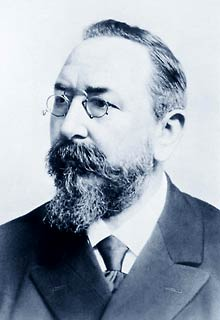

130 anos da STAHL CraneSystems GmbH
Em 1876, Rafael STAHL iniciou sua experiência com a invenção e a construção de equipamentos mecânicos.

Rafael STAHL o fundador
Em 1893, a empresa criada por STAHL iniciou a sua atuação na área de elevação de carga com seu primeiro elevador manual. O primeiro elevador elétrico foi construído em 1897 e, paralelamente, foi desenvolvida uma ponte rolante com capacidade para 12.5 toneladas e 11.5 metros de comprimento.
Produtos STAHL:
- Talha elétrica de corrente
- Talhas elétricas de cabo de aço
- Ponte rolante apoiada univiga
- Ponte rolante apoiada dupla-viga
- Pontes rolantes suspensas
- Guindaste giratório
- Monovias
- Blocos de rodas
- Kit de componentes
Peças sobressalentes; manutenção preventiva e corretiva
Consultoria especializada em transporte e movimentação de carga e fornecimento de componentes para outros fabricantes.
Todos os equipamentos podem ser fornecidos na versão á prova de explosão.